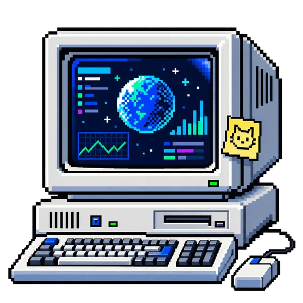
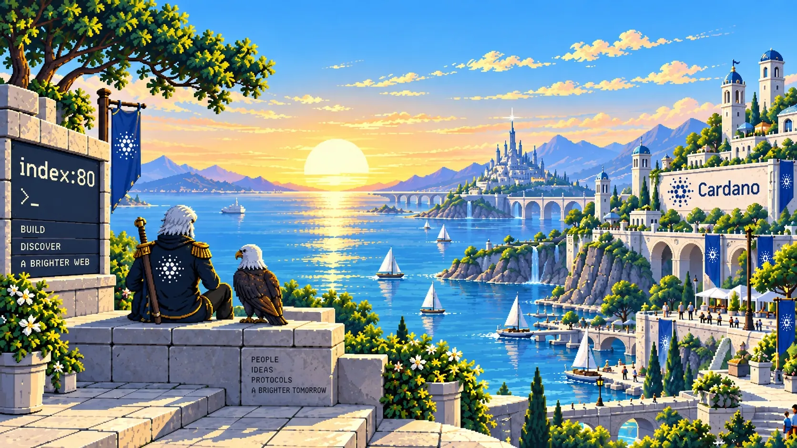

CARDANO
Cardano mainnetADA and Cardano native tokens. Handle: $index80web
addr1q8lk4p3p8436ng24x6gkglrrsrhhnn4kc0v6sff4plj2h6fgze77r90ayy3ufsusdzwj8g7j28hw68dgwy4dm5tnamhqax3ezt
Type at least two characters for suggestions. Use the arrow keys to choose one, or press Enter to see all results.
DISCOVER. VERIFY. MEASURE. PUBLISH.
INDEX:80 is an independent index of the Cardano ecosystem — projects, data, education and governance — built to be useful to people, search engines, developers and AI systems alike.
INDEX:80 is an independent project created and maintained by Adam Winstanley.
INDEX:80 software is licensed under Apache-2.0. INDEX:80 structured data and original editorial content are licensed under CC BY 4.0. Third-party logos, images, screenshots and marks remain the property of their respective rights holders and are outside those licences; the INDEX:80 name, logo and original brand and mascot artwork are reserved.
View the source and open files on GitHub → Read the Charter →

Every page here is plain HTML, CSS and JSON — the same open, machine-readable interface a 1989 terminal and a 2026 browser (or an AI system) can both read directly, with nothing gated behind an app or a login.
Every record on INDEX:80 is reviewed by a human before it is published. Payment never buys inclusion, ranking, Featured status or editorial influence, and verification is never an endorsement. The Charter sets the principles; the Methodology explains how they are applied.
Found something wrong? Send a correction or email hello@index80.com.
INDEX:80 is free to use and its code and public data are open. The site is deliberately designed to be inexpensive to host, but researching projects, checking sources, maintaining records, improving the platform and keeping information current all take real time and resources.
The project exists to support the wider Cardano ecosystem: helping worthwhile projects become easier to discover, giving newcomers a clearer route into Cardano, and creating an open source of information that can also be understood by search engines, developers and AI systems.
If you can’t donate, following INDEX:80 on X or LinkedIn and sharing our content really helps too. It is one of the simplest ways to support the project and help more people discover what is being built on Cardano.
If you choose to support INDEX:80, thank you. Every donation goes directly back into the resources needed to research, maintain and develop the project.
INDEX:80 was created by Adam Winstanley (@Sharedculture on X), a long-time crypto participant and active Cardano community member.
I have been involved in crypto since 2013 and active in Cardano since 2021 — collecting NFTs, joining communities, supporting builders and following projects across the ecosystem. Some have grown into strong and lasting communities; others have disappeared along the way. Through all of it, I have continued to believe that Cardano has an unusually deep pool of serious builders, creative projects and useful technology that deserves to be easier to discover.
INDEX:80 grew from the frustration of trying to find current projects through dead links, outdated directories, fragmented social timelines and information that is often hard for outsiders or newcomers to piece together. The aim is to make that discovery layer simpler: direct links, durable records, open-web infrastructure and clear information that is useful to existing users, newcomers, search engines, developers and AI systems alike.
More than anything, I built INDEX:80 to support the people building good things on Cardano — to help worthwhile projects get found, generate more attention and traffic from outside the ecosystem, and make Cardano easier to understand for someone arriving for the first time.
For new project records, ecosystem discoveries and site updates, follow the official INDEX:80 account on X or LinkedIn.
Research, drafting and technical work are assisted by a structured, multi-AI editorial process, while final editorial judgement remains human. See the Editorial & Open Web Charter for how that works.
I remain strongly optimistic about Cardano.
Not every project will survive, and the ecosystem has already been through cycles of hype, disappointment and change. But underneath that noise there are still exceptional builders, committed communities and years of serious technical work continuing to move forward.
I believe Cardano has much more to offer than most people outside the ecosystem currently see.
INDEX:80 exists partly to help change that.
If we can make the best projects easier to discover, make reliable information easier to find, help newcomers understand where to begin, and give search engines and AI systems a clearer view of what is actually being built here, then more of that work has a better chance of reaching the audience it deserves.
The next chapter of Cardano will be written by the people who keep building. I’m excited to see what comes next — and I hope INDEX:80 can play a small part in helping people find it.
